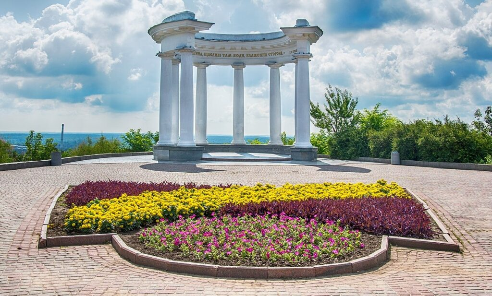

, що має характерну кругову форму з монументом Слави в центрі.")
Центр Полтави — це культурне й історичне серце міста, яке поєднує сучасність і минуле.
Свято-Успенський собор у Полтаві — це велична православна церква, яка є одним із головних символів міста.
Біла альтанка в Полтаві — це відомий архітектурний символ міста.